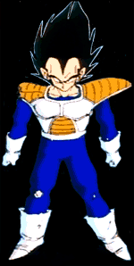

YOUR SITE HAS JUST BEEN HACKED BY:
[LOKI] aiRiaNo [LOKI]

Don't panic, nothing has been destroyed or deleted. I would like to thank the people of Microsoft for their wonderful networking software (sarcasm), and to all those web hosting services that overcharge people, and myself for doing what I do. Further more, I would like to give shouts those bastards at 2600 (love the mag btw), l0pht, and CDC. More shouts to my boi Beta. SORRY JAG, FORGIVE MY TEMPER...
THANK YOUR JIM ROLAND!